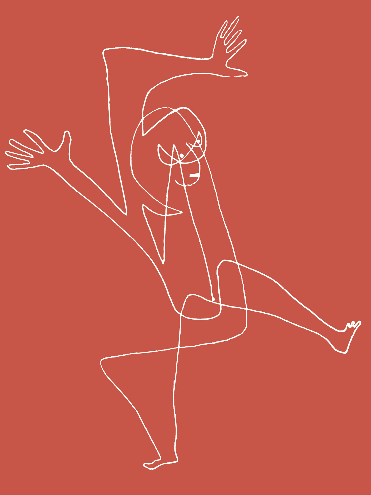

CORNELL UNIVERSITY
Critical design, developed by revolutionary duo Dunne & Raby, combines design fiction and speculative design. For my final design project at Cornell, I utilized this framework to analyze popular views on organ donation.
"Reverse-Xenotransplantation" critiques a lifeworld adjacent to our own where those more fortunate pay privatized prisons for organ rights of death-row prisoners to transplant into beloved family pets.
